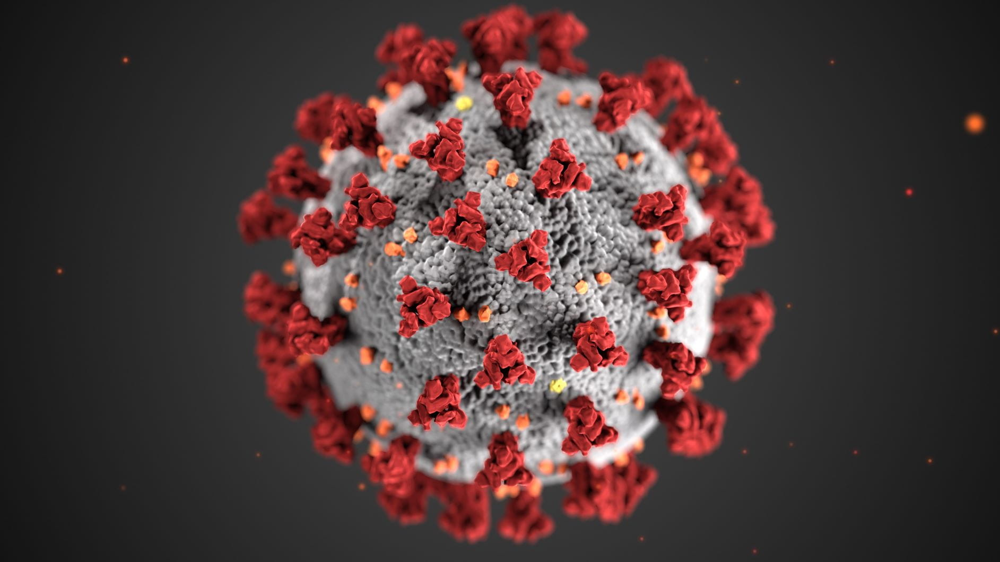
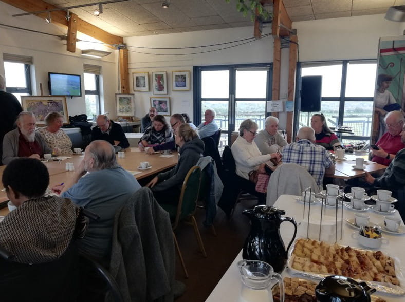
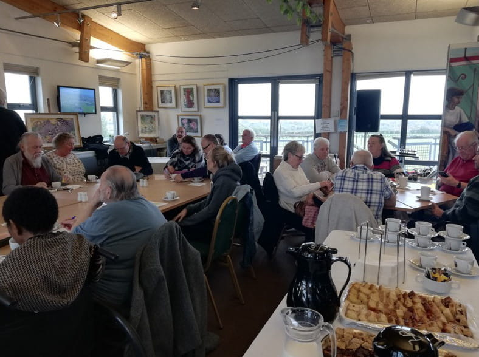

Latest
All the latest IWKPA news, straight from the team.
Home Dialysis Campaign Manifesto
This manifesto, in the form of a report with recommendations that has been prepared for the Secretary of State for Health and Social Care and the kidney community following a five-year campaign. This is a culmination of the Home Dialysis Summit hosted by the All-Party Parliamentary Kidney Group (APPKG) in May 2025.
This report is the result of a five-year campaign instigated, created and contributed to by the National Kidney Federation, colleagues from across the NHS and people living with kidney disease from across the country. The report is the final output from the campaign, but it is not the end of the work. The NKF and the APPKG will continue this work over the coming years in full recognition of the impact on patients’ lives and the significant fiscal benefit.
You can view the report on the NKF website:
2024 Fundraising Update
We held a Soup and Roll Social in Godshill on 20th October. This included a quiz and raffle and was attended by patients and carers, who all braved the bad weather on the day and helped to make it a successful, event raising £120. Another Soup and Roll Social is planned for April 2025, so we hope to see you there!
Our fundraising quiz held at Newclose Cricket Ground on 1st November was a huge success and raised £400. Thank you to everyone who came along.
We also attended various supermarkets throughout the year with our collection tins to continue our fundraising efforts and raise awareness of the IWKPA charity Islandwide.
2023 Fundraising Update
On 1st & 2nd July we once again had a stall at Havenstreet Steam Railway 1940s Weekend. Our "prize every time" card game was extremely popular and along with crafts and gift items donated by IWKPA members, we raised a bumper total of £722 over the weekend! Many thanks to those who volunteered to help man the stalls over the weekend.
On Sunday 10th September we attended the End of Summer event at Smallbrook Stadium in Ryde. Now in its second year, the event benefits a wide range of Island charities and good causes. The weather was not kind to us, but we still had an enjoyable day and raised £42 for the IWKPA.
Cream Tea & Quiz Social Event
The IWKPA welcomed around 30 supporters to Thompson's Cafe for a social quiz accompanied by a delicious cream tea. All renal patients and their carers received a complimentary cream tea whilst all others paid a nominal fee. A most enjoyable afternoon was had by all.
Look out for other events during the year!
2022 Fundraising Update
We attended the 1940s weekend at Havenstreet Steam Railway in July 2022. Our craft stall raised £356 which was a fantastic result!
In September 2022, we once again had a stall at Wolverton Manor Garden Fair. In the previous year this was our most successful fundraiding event so we were keen to try and raise even more money this year. Our £1 a go, prize every time stall was really popular and we were delighted to raise a total of £600 over the 2 days, our best ever total beating the year before.

Record-breaking Fundraising at Wolverton Manor
We're delighted to announce that we attended Wolverton Manor Garden Fair on Saturday 4th and Sunday 5th September and achieved a bumper total of £580!
This was a fantastic amount, the highest ever achieved, and we send our thanks to the volunteers who helped out on the day, and those who donated prizes and gifts to the stall.
On a hot sunny weekend, the fair drew in the crowds and our £1 'everyone's a winner' card game was very popular, with many coming back again and again!
We also had plants, calendars, cushions and gifts for sale.
We're glad we returned to Wolverton this year and thankful for the money raised, which will all stay on the Island and help local renal patients.
£337 Raised at 1940s Weekend
On Saturday 3rd and Sunday 4th July, the IWKPA had a stall at the 1940s weekend at Havenstreet Steam Railway.
Over the two days we hosted a craft stall and kids hook a duck and raised a fantastic £337!
Many thanks to all the donations of crafts, which included hand-made cushions, baby clothes, toiletry sets, plants and much more.
Photo credit: David Yendall
Coronavirus (COVID-19) Update
Due to Coronavirus the Committee has had to run a little differently this year.
All fundraising events we planned to attend were cancelled due to lockdown and also not being able to socially distance. Next year, we are hoping to attend both the 1940's weekend at the Steam Railway in July and Wolverton Manor in September to ensure that fundraising continues for the IWKPA.
We are still be collecting for gifts to put on our stall for both these events - if there are any donations, please contact Ann Daly on 01983 611671 or iwkpacontact@gmail.com and we can arrange for collection.
Committee meetings have not taken place, however the members have all kept in touch by email or phone and have been able to "meet" virtually.
The AGM has not happened either, however we will be planning one for March/ April 2021 - details will be added to the website in due course.
New members for the committee will be welcomed at any time - please contact the Chair - Ann Daly for more details
Coronavirus has not changed the way the IWKPA support patients in need - either contact the nurses at the Renal Unit for support or contact Ann Daly on 01983 611671 or iwkpacontact@gmail.com for more support/guidance/signposting.
Get advice about coronavirus and dialysis from Kidney Care UK
Donation from Calbourne Car Boot
We were delighted to be chosen by Calbourne Car Boot Sale as one of their two charities of the year, along with the IOW Brainy Bunch. We were presented the very generous cheque of £1,386.67, which will go directly to supporting kidney patients on the Island. Thank you Calbourne Car Boot Sale!
IWKPA Quiz at Brading Roman Villa
A wonderful afternoon of fun was enjoyed by all at our recent quiz afternoon.
Thank you to all who organised, supported and attended this event.


 


Wolverton Manor Fayre
The glorious weather ensured that there were plenty of visitors to the fayre this year and helped raise the wonderful sum of £300 for IWKPA.
Huge thank you from Ann for all that helped to support the charity.


Supermarket Collection
We successfully raised £169.70 by collecting at Morrison's Store in Newport.
The Chairperson extends her thanks to everyone that helped as such an amount could not have been raised without a good team effort.
Cheque Presentation
Committee Members Claire and Karen attended the Spyglass Inn in Ventnor on the 3rd of December and were presented a cheque for £1,180.
The money was raised from the sales of a CD which was the brain child of Simon Gooden of St. Lawrence and two of his musician friends Mark Innocent and Mike Huddart. Simon has received his third transplant and is doing well and wanted to give something back help other kidney patients. Many thanks to them all.

Wolverton Manor Garden Fete
Joan our social secretary arranged for us to have a stall at the Wolverton Manor Garden Fete held last weekend. We tried desperately to erect the gazebo on Friday and wish we had had a camera handy. The rain fell down and we were soaked to our undies but did manage to get it set up.
Saturday was fine and after setting up the stall did very well.
The stall was called everyone a winner, very simple with lots of small gifts and prizes and we did very well. Overnight the wind and rain blew so hard our gazebo landed upside down but thankfully intact which was better than most on the site.
Sunday was windy but again we did very well and had many people coming up to us and talking about their experiences so our networking was brilliant.
We cleared £210 and must say a big thank you to Shelly, Claire, Anne and Shirley for all their hard work.

IOW Festival Tickets Winner
We were very lucky once again to have a pair of Isle of Wight Festival tickets donated to the IWKPA, as the star prize in our latest fundraising raffle.
We're delighted to annouce that the winner is Mark Isaacson and we hope that he had a great time at the Festival.
Thank you to everyone who bought tickets and helped us raise important funds to continue our work in supporting local people on the Island.

Holidays
My husband Alex has been on HD dialysis for 4 years and for nearly 2 years has been using the NX stage system at home. Having dialysis at home does give us a more flexible lifestyle and more confidence to manage our new way of life. In 2014 we decided to travel to Spain for a holiday. The Nx stage system can be transported for holidays, but we decided to arrange for Alex to have his treatment at the Hospital in Torromolinos. We contacted Freedom Travel and they were very helpful and made all the arrangements. We had to arrange to have a blood test for Hepatitis and HIV and swabs for MRSA about a month before travel and the results forwarded to Freedom Travel. We then received an introduction letter to the dialysis unit at Torromolinos and we just turned up at the time and date as arranged. We just had to take our passport and EH1C card. We had the early morning session and Alex had a taxi from the hotel to the unit and they arranged a taxi back at lunch time.
The treatment he received was excellent. The staff caring and efficient, although only a few had any English Alex had no problems with communication. A Doctor visited the unit daily. We went to the same unit last November and they remembered him and hope to see him again next year.
As Spain was such a success with went to Tenerife last February and now there will be no stopping us with our travels. Going abroad is obviously not as simple as it used to be prior to dialysis it just takes a bit longer to arrange but well worth it when you are relaxing in the sun with a nice glass of wine. In Spain we stayed in Benalmedina and the hotel had a bus stop outside and a lift from the foyer down to the beach so it was ideal for us as Alex doesn't walk too far.
Freedom have a list of several holiday destinations that take the EH1C card and others where you have to pay.
Any help we can give please get in touch with us via the IWKPA and Happy Holidays.
Joan and Alex Bailey